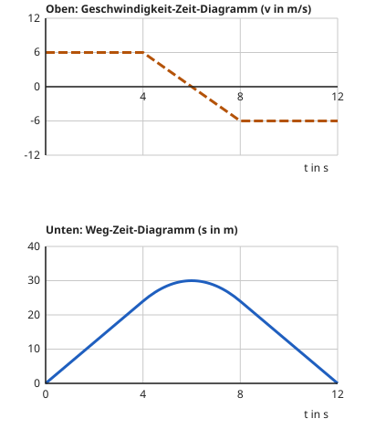

Beide Diagramme zusammen
Mit einem KI-Tutor lernen
Ein KI-Tutor erklärt dir diese Seite und hilft dir bei den Übungen. Wähl deinen Assistenten:
Mit Claude öffnen Mit ChatGPT öffnen Mit Mistral Vibe öffnen
Du nutzt dein eigenes Konto beim Anbieter. Der Assistent ist kein Angebot von lernapps.net: lernapps liefert nur Inhalte und Übungen. Die Wahl gilt für alle Seiten, nur auf diesem Gerät.
Zwei Diagramme, eine Fahrt
Du kannst beide Diagramme einzeln lesen. Jetzt legst du sie zusammen: Sie beschreiben dieselbe Fahrt, nur aus zwei Blickwinkeln. Das Weg-Zeit-Diagramm zeigt, wo der Körper ist. Das Geschwindigkeit-Zeit-Diagramm zeigt, wie schnell er ist. Besonders spannend wird es, wenn ein Körper umkehrt und wieder zum Start zurückfährt.
Wie die Diagramme zusammenhängen
Im Bild stehen die beiden Diagramme untereinander, mit derselben Zeitachse. Oben liest du die Geschwindigkeit ab, unten den Weg vom Start. Aus der Höhe der oberen Linie wird die Steigung der unteren Linie.

Oben die Geschwindigkeit, unten der Weg derselben Fahrt. Achte darauf, was unten passiert, wenn die obere Linie die Zeitachse kreuzt.
Quelle: eigene Zeichnung. Lizenz: CC-BY-4.0.Für die Richtung gilt: Eine positive Geschwindigkeit bedeutet, dass der Körper sich vom Start wegbewegt. Eine negative Geschwindigkeit bedeutet, dass er sich in die Gegenrichtung bewegt, hier auf den Start zu. Dann liegt die obere Linie unter der Zeitachse, und die untere Linie fällt: Der Weg vom Start wird kleiner. Bei kehrt der Körper um. Dort ist der Weg am größten.
Weg und Entfernung
Im Weg-Zeit-Diagramm steht hier die Entfernung vom Start. Fährt der Körper zurück, wird sie kleiner, obwohl er weiter fährt. Die Strecke, die der Tacho zählt, würde dagegen immer weiter wachsen.
Ausprobieren im Bewegungslabor
Im Labor siehst du beide Diagramme untereinander. Oben stellst du mit den Reglern die Geschwindigkeit bei 0, 4, 8 und 12 s ein, jetzt auch unter 0 bis −12 m/s. Unten folgt die Entfernung vom Start. Die Achsen bleiben an ihrem Platz. Zu Beginn fährt das Auto immer mit 6 m/s. Ziehe den Regler bei 12 s unter 0 und beobachte, was unten mit der Linie passiert. Die Messmarke zeigt dir Geschwindigkeit und Entfernung zu einem Zeitpunkt.
Die schraffierte Fläche zwischen Linie und Zeitachse ist der Weg. Unter der Zeitachse zählt sie rückwärts.
Messmarke: Bei t = 6 s ist das Auto 36 m vom Start entfernt.
Messmarke: Bei t = 6 s ist die Geschwindigkeit v = 6 m/s.
Das Bewegungslabor zeigt das Geschwindigkeit-Zeit-Diagramm (oben) und das Weg-Zeit-Diagramm (unten) einer Fahrt von 12 s. Mit vier Reglern legst du die Geschwindigkeit bei 0, 4, 8 und 12 s fest (−12 bis 12 m/s). Beispiele:
- Geschwindigkeiten 6, 6, 6 und 6 m/s: Die obere Linie ist waagerecht, die untere steigt gerade bis 72 m.
- Geschwindigkeiten 6, 6, −6 und −6 m/s: Der Weg steigt bis 4 s auf 24 m und bis 6 s auf 30 m, fällt dann auf 24 m bei 8 s und auf 0 m bei 12 s.
- Geschwindigkeiten 4, 4, 4 und −4 m/s: Der Weg steigt bis 8 s auf 32 m, noch bis 10 s auf 36 m und fällt dann auf 32 m bei 12 s.
Liegt die obere Linie unter der Zeitachse, fällt die untere.
Eine Fahrt mit Umkehr
Das Auto auf dem Parkplatz
Das Auto im Bild fährt los, wird langsamer, kehrt um und kommt zum Start zurück. So erzählen beide Diagramme dieselbe Fahrt.
| Zeit | Oben (Geschwindigkeit) | Unten (Entfernung vom Start) |
|---|---|---|
| 0 bis 4 s | bleibt bei 6 m/s | steigt von 0 auf 24 m |
| 4 bis 6 s | fällt von 6 auf 0 | steigt noch bis 30 m |
| bei 6 s | ist 0 | ist am größten: Das Auto kehrt um |
| 6 bis 8 s | fällt unter 0 | fällt von 30 auf 24 m |
| 8 bis 12 s | bleibt bei −6 m/s | fällt von 24 auf 0 m |
Übung
Übung
Lösung
Das Auto fährt am schnellsten.
Die obere Linie liegt bei 6 s auf der Zeitachse: Die Geschwindigkeit ist 0. Am schnellsten ist das Auto am Anfang, mit 6 m/s.
Das Auto kehrt um. richtige Antwort
Richtig: Oben ist v = 0, und unten ist der Weg am größten. Danach fährt das Auto zum Start zurück.
Das Auto ist wieder am Start.
Unten liegt die Linie bei 6 s noch bei 30 m. Den Start erreicht das Auto erst bei 12 s.
Bei 6 s kreuzt die obere Linie die Zeitachse (v = 0), und die untere Linie hat ihren höchsten Punkt: Der Körper kehrt um.
Mehr dazu:
Übung
Lösung
30 m vom Start entfernt
30 m war die größte Entfernung, bei 6 s. Danach ist das Auto zurückgefahren.
24 m vom Start entfernt
24 m ist die Entfernung bei 4 s und noch einmal bei 8 s. Bis 12 s fährt das Auto weiter zurück.
Am Start richtige Antwort
Richtig: Unten endet die Linie bei 12 s bei 0 m. Das Auto ist zurück am Start.
Du liest den Weg am Ende der unteren Linie ab: 0 m, also wieder am Start.
Mehr dazu:
Übung
Lösung
Richtige Antwort: Die Aussage stimmt.
Eine negative Geschwindigkeit heißt: Der Körper bewegt sich auf den Start zu. Darum fällt die Linie im Weg-Zeit-Diagramm.
Mehr dazu:
Übung
Lösung
Richtige Antwort: -4 m/s
Bei 8 s ist das Auto 16 m vom Start entfernt (16 m bis 4 s, danach hebt sich Vorwärts- und Rückwärtsfahren auf). In den letzten 4 s muss es 16 m zurückfahren, im Mittel also mit −4 m/s. Der Mittelwert aus −4 m/s am Anfang des Stücks und der gesuchten Geschwindigkeit am Ende muss −4 m/s sein, also ist sie −4 m/s.
Mehr dazu: